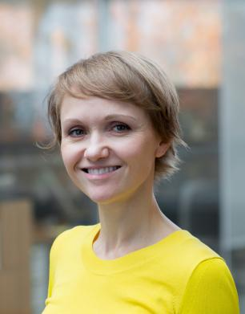

CIDR 2024
January 14-17, 2024 Chaminade, USA

Menu:
Tweets by cidrdbCIDR 2024 Keynote Speakers
Monday Keynote
Constraint-Driven Innovation
Abstract:
Constraints have long driven technical innovation. Resource shortages have forced innovative solutions across all industries, but especially within the database community. For example, storage IOPS have always been in relatively short supply and that difficult constraint drove the invention of write-ahead logging and B-tree index structures. Both innovations were forced by relatively poor storage I/O rates. Similarly, memory bandwidth grows more slowly than CPU bandwidth, and this constraint led to the invention of creative mutual exclusion primitives and cache-conscious data structures. However, as impactful as constraints have been over the years, they can also block innovation. In-memory databases weren’t broadly useful in the 1980s when first described. Until recently, commercial database administrative complexity limited the broad adoption of application-specialized databases. These constraints are now falling fast, and we’re currently in a golden age of database innovation. This talk focuses on the database innovations made possible by technical advancements removing long-standing constraints. We’ll discuss many examples but, remembering that constraints also drive innovation, we’ll conclude with a couple that won’t fall anytime soon and will continue to force innovation.
Bio:
James is Senior Vice President and Distinguished Engineer at Amazon. He works on technology across the company focusing on making complex systems scale, work reliably, and operate both safely and cost effectively. He has 209 patents granted over 37 years in the industry across Amazon, Microsoft, and IBM. Over the years he has held leadership roles on Ada and C++ programming language compiler teams, SQL Server and DB2 database engine development teams, high-scale cloud services, network router engineering, cloud server design, datacenter power distribution systems, datacenter mechanical systems, robotics, and logistics systems. In his spare time, he circumnavigated the world in a small boat, enjoys Formula 1 and NFL football, and is interested in just about all engineering disciplines.
Wednesday Keynote

Processing-in-memory: A Retrospective from a Real-World Product Experience
Abstract:
Disparity in speeds between CPU processing and memory accesses produces a phenomenon known as the “memory wall”, where the CPU spends most of its cycles waiting on memory. Processing-in-memory has been long considered a holy grail in fighting the memory wall. Its promise was shown in simulation, but realizing these benefits for real remained challenging. We recently witnessed the arrival of a commercially available processing-in-memory product from a company called UPMEM. Their architecture made interesting trade-offs between ease of integration and ease of use. In this talk I will discuss what we learned from our experience with this product and reflect on what “ideal” processing-in-memory hardware could look like.
Bio:
Alexandra Fedorova is a Professor in the Electrical and Computer Engineering Department at UBC. She received her PhD at Harvard in 2006 with a thesis on Operating System Scheduling for Multicore Processors. While at Harvard, Dr. Fedorova interned at Sun Microsystems Labs and contributed to the development of the Niagara processor simulator and experimented with adopting transactional memory in real applications. Between 2006 and 2015 Dr. Fedorova was an Assistant and then Associate professor at the School of Computing Science at SFU, where she also launched the Big Data professional Master’s program in 2014. Dr. Fedorova was awarded the Alfred P. Sloan Research Fellowship in 2012 and the ACM CRA-W Anita Borg Early Career Award in 2011.
Her research centers around performance, usability and energy-efficiency of computer systems; the current focus is on effective management of memory and CPU resources. She also measures and hacks operating systems, runtime libraries and other system software and teaches courses on all kinds of systems: operating, distributed, Big Data. In her spare time, she consults for MongoDB; working on enhancing the performance of their back-end key-value store WiredTiger.